1. Comunicação química: As plantas são capazes de comunicar umas com as outras por meio de sinais químicos.
Por exemplo, quando uma planta é atacada por insetos, ela pode liberar substâncias químicas para alertar
plantas vizinhas, permitindo que elas se preparem para possíveis ataques.
2. Plantas podem sentir toque: Algumas plantas têm a capacidade de sentir o toque e reagem a ele. Um exemplo é
a sensitiva (Mimosa pudica), que fecha suas folhas quando tocada.
3. Longevidade: As plantas podem viver muito tempo. Algumas das árvores mais antigas do mundo têm milhares de
anos, como as sequoias gigantes na Califórnia.
4. Mimetismo: Algumas plantas desenvolveram características que as fazem se parecer com outros objetos ou
seres vivos para se protegerem. Um exemplo é a orquídea louva-a-deus, que se assemelha a uma fêmea de
louva-a-deus para atrair machos reais e, assim, polinizar as flores.
5. Movimento: Além da sensitiva mencionada anteriormente, existem outras plantas que exibem movimentos, como a
flor-de-lótus, que fecha suas pétalas à noite e as abre novamente pela manhã.
Essas são apenas algumas curiosidades fascinantes sobre o mundo das plantas. Elas desempenham um papel crucial
em nosso ecossistema e têm uma grande variedade de características e adaptações surpreendentes.
O antúrio possui folhas em formato de coração e suas flores podem ser de diversas cores, como vermelho, branco, verde, roxo ou rosa. Ele não precisa de sol direto para se desenvolver, basta manter o solo úmido e, em dias muito secos, borrifar água nas folhas. Atenção para não encharcar o solo!
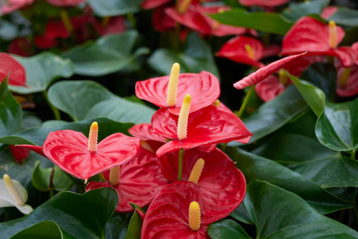
Popularmente conhecida como planta-aranha, esta folhagem ornamental de pequeno porte é resistente e pouco exigente com regas e manutenções. Mas fique atento: entre as principais variedades existentes do clorofito, o clorofito vittatum, de folhas com as partes centrais claras e bordas verdes, é a que gosta de ambientes de sombra.
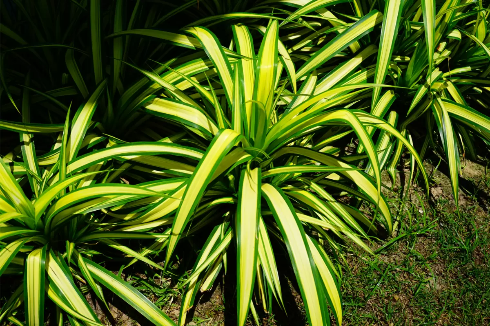
A costela-de-adão é opção perfeita para trazer um toque especial ao décor da sua casa. A espécie é fácil de cuidar, se adapta bem aos ambientes internos e cai superbem em vasos no chão. Além disso, regá-la uma vez por semana já é suficiente para mantê-la saudável. Adulta, a planta dá até flor, que depois se transforma em um fruto comestível.
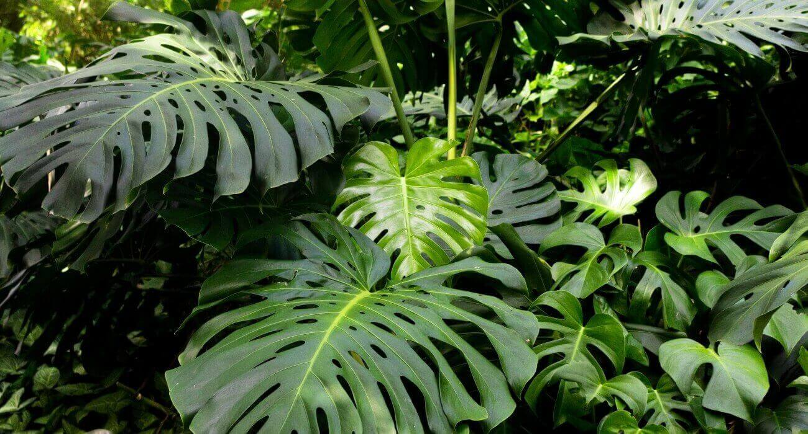
Boa para os jardineiros de primeira viagem, a espada-de-são-jorge é uma espécie que exige pouca manutenção, é bastante resistente e ideal para cantinhos com pouca luz. Ela não precisa ser regada com tanta frequência – uma vez a cada 10 dias, no inverno, e uma vez por semana no verão já são suficientes.
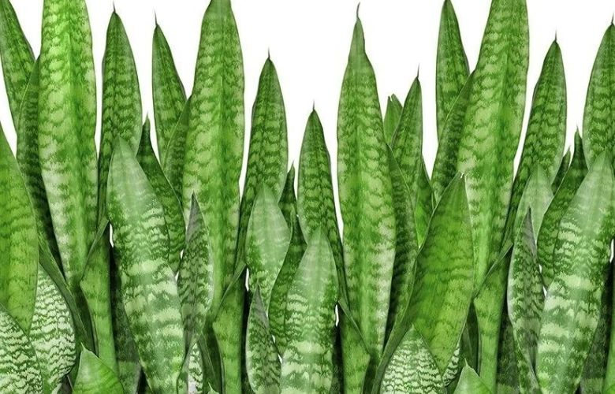
Com suas folhas grandes e escuras, o lírio-do-amazonas vai bem em vasos e canteiros. Ela gosta de solo úmido (nunca encharcado), áreas de sombra e dá uma flor branca que perfuma todo o ambiente.
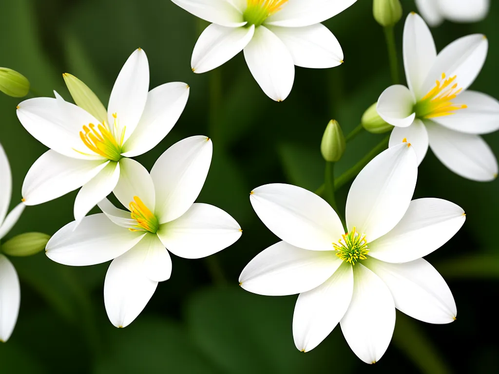
A exposição intensa ao sol pode causar queimaduras nas folhas brilhantes e duras do pacová. Por isso, essa espécie também é ideal para ambientes internos e de sombra. Para mantê-la sempre bonita e saudável, regue uma vez por semana.
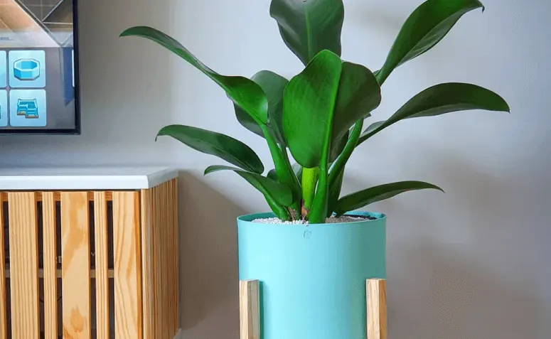
A palmeira-chamaedorea é pequena, vai superbem em vasos e é uma das espécies indicadas para áreas sombreadas. Aposte nela para a decoração daquele canto escondido do sol na sua casa.
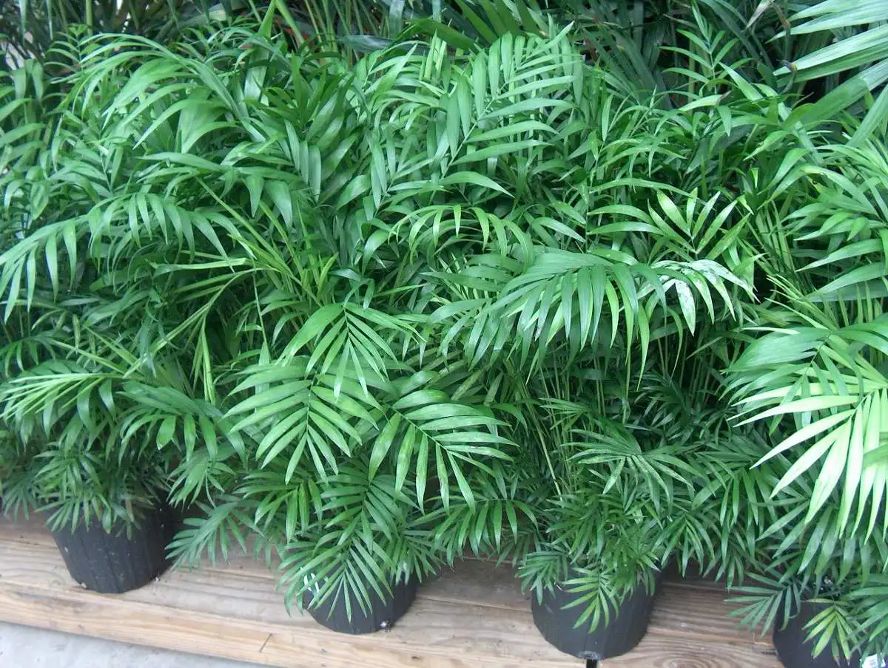
Por ser uma trepadeira, o singônio é indicado para ser usado como planta pendente e se desenvolve melhor quando cultivado em locais de sombra e meia-sombra. Regue essa espécie duas vezes por semana.
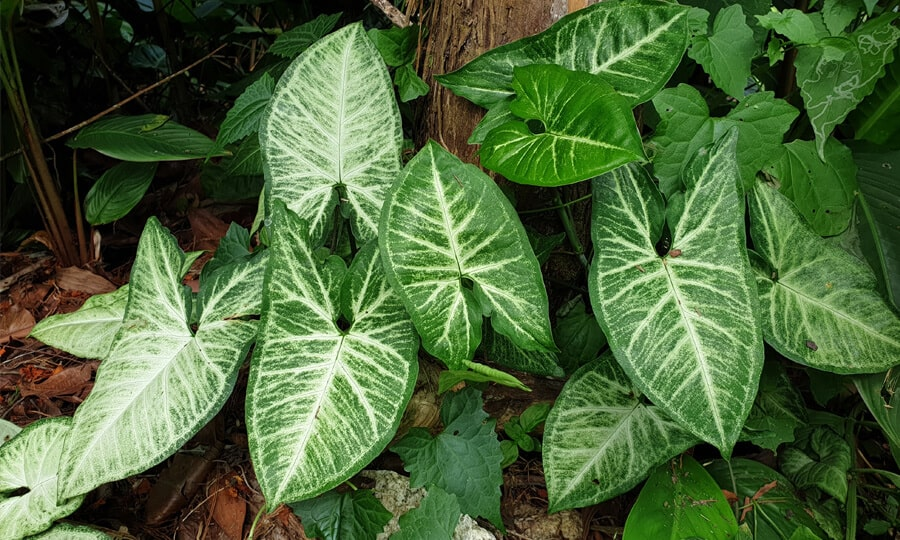
Zamioculca é uma planta popular de interior devido à sua resistência e baixa necessidade de cuidados. Suas folhas verde-escuras e brilhantes conferem um toque decorativo a espaços internos e ela é conhecida por sobreviver em condições de pouca luz. Além disso, a Zamioculca é tóxica para animais de estimação, portanto, deve ser mantida fora do alcance deles.
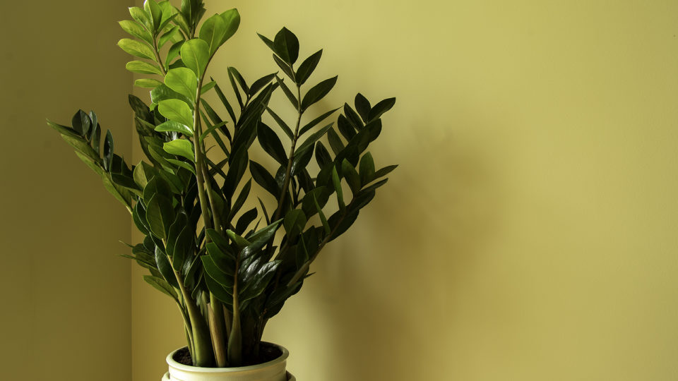
Com crescimento maior na época da primavera e verão, as petúnias apresentam flores em cores variadas e devem ter a base regada de duas a três vezes por semana.
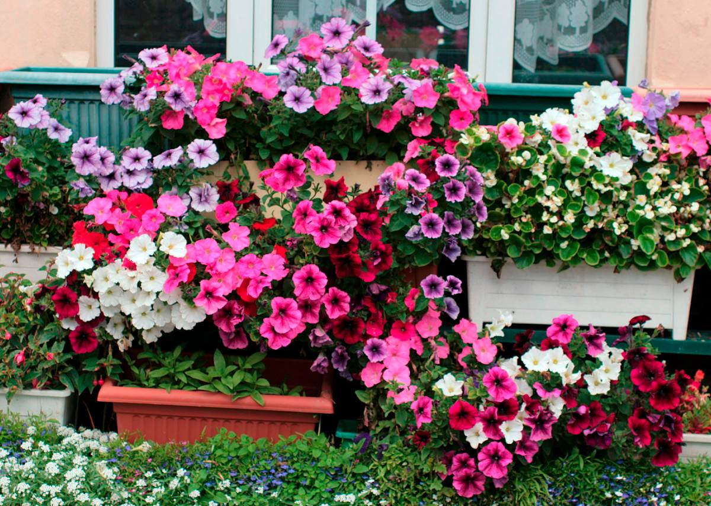
Pede sol pleno, mas também aceita o cultivo em meia-sombra. Gosta de solo sempre úmido, mas não encharcado, e não é resistente ao frio. É muito utilizada na confecção de arranjos e buquês.
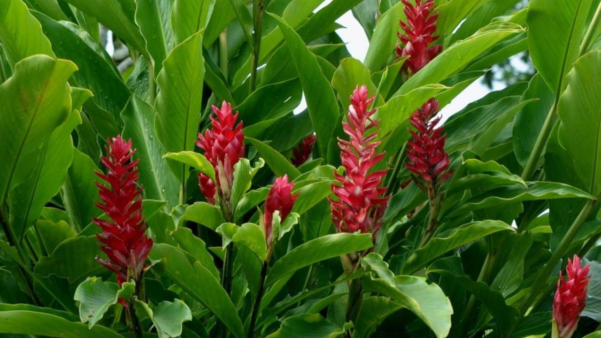
Essa espécie de origem mexicana gosta de solo úmido, mas evite encharcar. Regue a cada 2 dias e cultive-a em sol pleno.
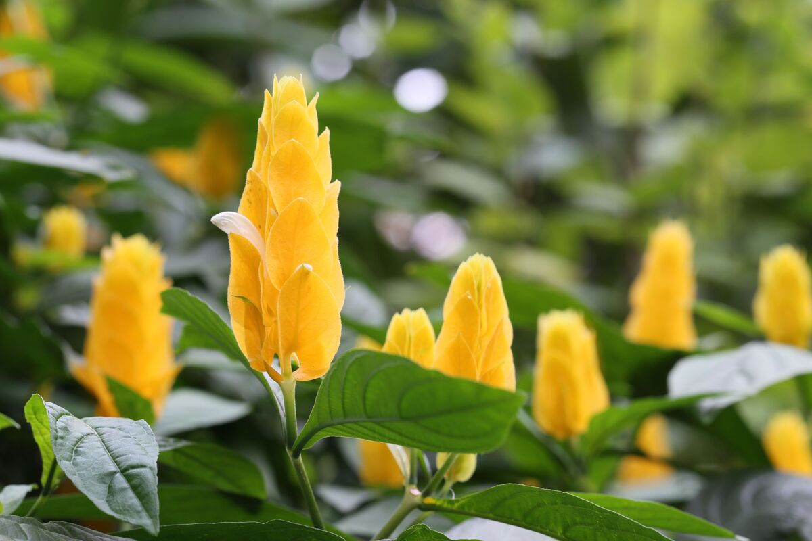
Essa espécie é tolerante a estiagens e a temperaturas mais frias. É uma boa opção para cultivo em jardineiras, maçiços ou renques, acompanhando grades e muros
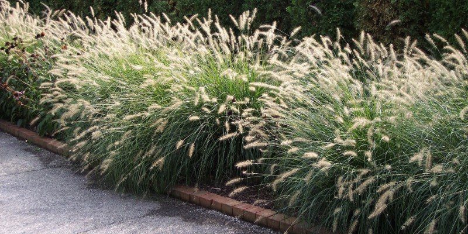
Resiste ao frio e ao calor, mas prefere ser cultivada em clima moderado, com regas periódicas. As mudas devem ser plantadas com certa distância.
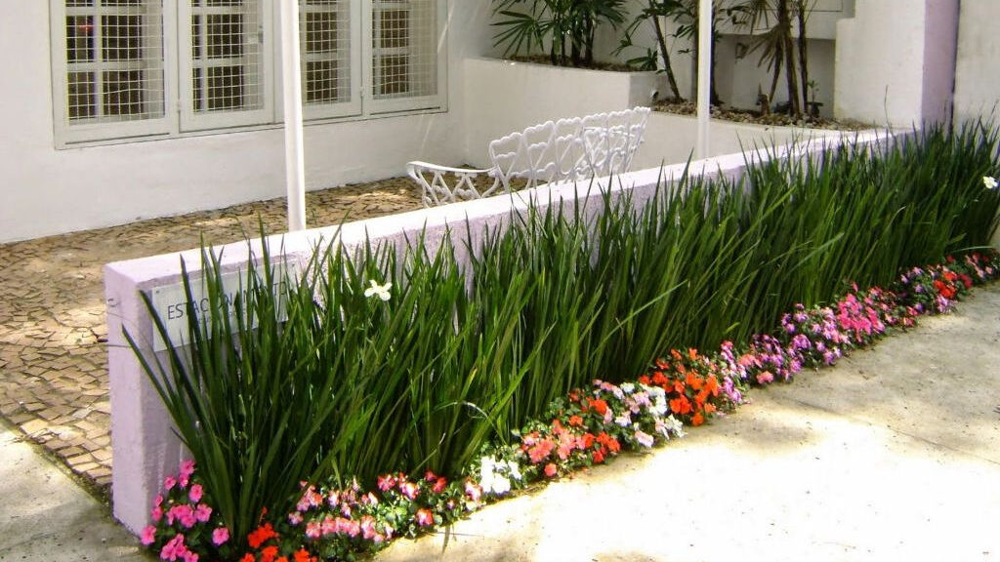
Podendo ser cultivada tanto no solo quanto em vasos, a palmeira-fênix prefere solo rico em matéria orgânica e úmido. É o tipo de planta que valoriza projetos paisagístico de diversos estilos, como o tropical, oriental, entre outros.
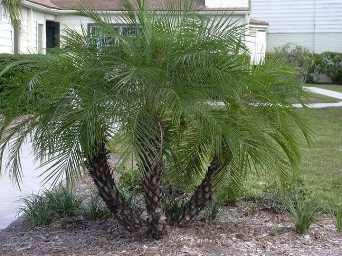
No verão, as flores abrem pela manhã com a presença do sol e fecham à tarde. É uma espécie tolerante a clima seco.
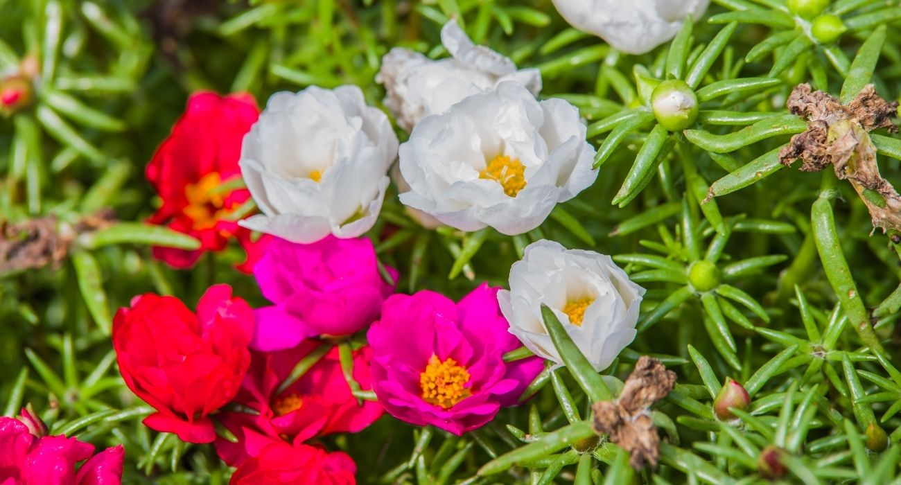
Apresenta floração extensa, que vai do início da primavera até o final do outono. Pode ser cultivada como trepadeira ou cerca-viva.
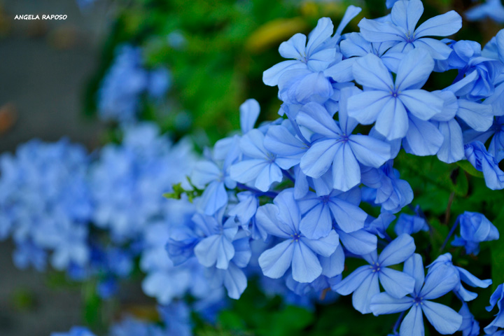
Ela é de origem asiática e ama um solzinho! Ela necessita de regas regulares e precisa ser plantada em pleno sol.-
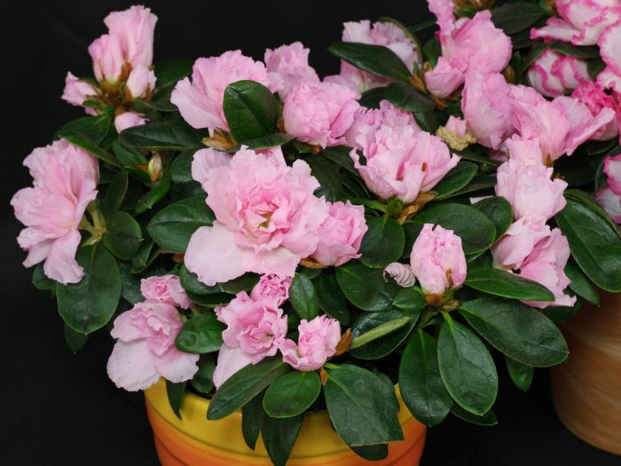